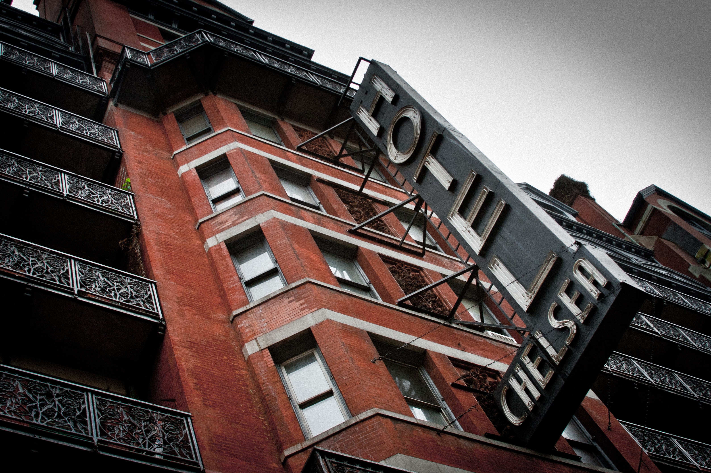

 Today, Chelsea is characterized as one of the most eclectic neighborhoods in New York City, but it has not always been that way. An example is how it started as an estate of 10 blocks, and now the total area of the neighborhood is approximated as 0.774 square miles – depending on which borders one uses.
It takes its name from the estate and Georgian-style house of retired British Major Thomas Clarke, who bought the property in 1750. He chose the name "Chelsea" after the Royal Hospital Chelsea, a retirement home for soldiers in London, England. The original Chelsea stretched between 8th and 10th Avenues, and 19th and 24th Streets. Chelsea is one of the oldest neighborhoods in New York City to keep its original name. His grandson, Clement Clarke Moore divided the original estate in the 1830s. After this division, Chelsea really began to develop and grow.
Like most New York City neighborhoods, Chelsea has transformed throughout the years depending on those residing in its townhouses and apartment buildings. When Clement Clarke Moore was the property owner of much of Chelsea, the laying of the Hudson River Railroad tracks in 1847 that ran along Tenth Avenue greatly impacted the neighborhood. The neighborhood became filled with warehouses, lumberyards, and industry. Then, in 1869 the world’s first elevated train was erected, running from Battery Park, up 9th Avenue (recently transformed into the High Line), an elevated, mile-long, public park featuring many works of art.
For much of the period from 1869 to 1969, Chelsea was known for industrialization and affordable housing, a working-class immigrant enclave as manufacturing took hold on the Hudson River. Brothels, saloons, and gambling landed on 23rd Street in the late-nineteenth century, as did the Hotel Chelsea. One of the most famous landmarks, the hotel was built between 1883 and 1885 on 23rd Street in the area, which was then New York City’s theatre district. This is when Chelsea’s artistic nature began, which continues to this day. The hotel is mainly known for the notability of its guests over the years. Some of whom include: writers Arthur Miller, Tennessee Williams, Thomas Wolfe, Mark Twain, Arthur Miller, Stanley Kubrick, O. Henry, Dylan Thomas, musicians, Patti Smith, Jim Morrison, Andy Warhol, actors Jane Fonda, Ethan Hawke, Sam Shepard, Dennis Hopper, Uma Thurman, Elliott Gould, and singers Patti Smith, Madonna, Leonard Cohen, and Janis Joplin. The hotel was declared a New York City landmark in 1966, and was listed on the National Register of Historic Places in 1977.
After Greenwich Village’s Stonewall Inn raid of 1969, Chelsea changed immensely. Gay riots began throughout New York City, and after finding few places affordable in Greenwich Village, gays and lesbians, found Chelsea more welcoming. This gay influx turned it into the city’s gay mecca. This slowly spurred Chelsea's upwardly mobile gentrification.
Modern Chelsea has gone through many changes, having expanded to five or six times its original size over an approximately 200 year span. Increasingly upward waves of gentrification have made Chelsea with its numerous galleries, museums, and the High Line, the sophisticated, artsy tourist hub we know today.
(Content Credit: https://en.wikipedia.org/wiki/Chelsea,_Manhattan, https://en.wikipedia.org/wiki/Hotel_Chelsea & https://macaulay.cuny.edu/eportfolios/ocejospring14chelsea/history/)